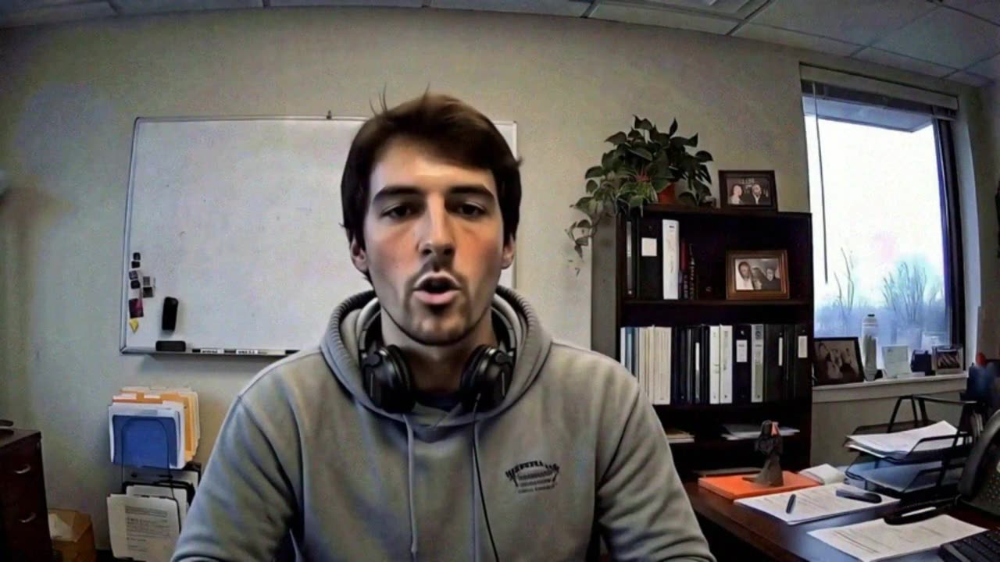
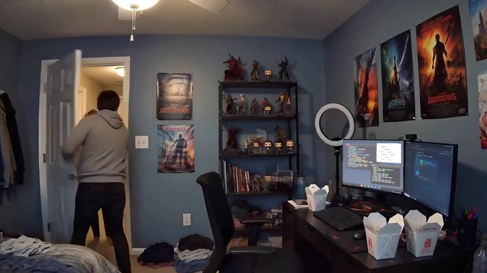

It was Ryan, in his bedroom, wearing the Exec's face and voice like a costume. The software did it live, while he talked.
Drag across the call to take the mask off.

What you sawWho was thereNo hacking. No break-in. Just public video, a decent computer and an evening.
A 23-minute town hall on the company's channel is about 41,000 frames of his face: every angle, every expression, every lighting condition. A podcast or a keynote gives clean speech to copy his voice.
Nothing here is stolen. He posted it. We all clapped.
The model learns the Exec's face point by point: how his mouth shapes a "p," how his eyes crease when he smiles. Then it learns Ryan's.
Now it can take any expression Ryan makes and draw it with the Exec's face. A voice model does the same with sound: Ryan speaks, the Exec's voice comes out.

The "studio" is a bedroom. A ring light keeps the face evenly lit so the swap holds together. A gaming graphics card redraws the Exec's face 30 times a second, fast enough for a live call.
The office behind him? A virtual background. Same trick you use to hide laundry.
The fake feed is piped into an ordinary video call as if it were a webcam. The call app has no idea. Neither do you.
The weak spot is never the picture. It's what the picture asks you to do. That's the rest of this module.
Cheaper than the noodles.
Making a convincing live deepfake used to need a studio. Now it needs a hobby. The software is free, the face is public, and the hardware is what your nephew games on.
Prices are illustrative. The loss is real: engineering firm Arup, Hong Kong office, 2024. More in Chapter 3.